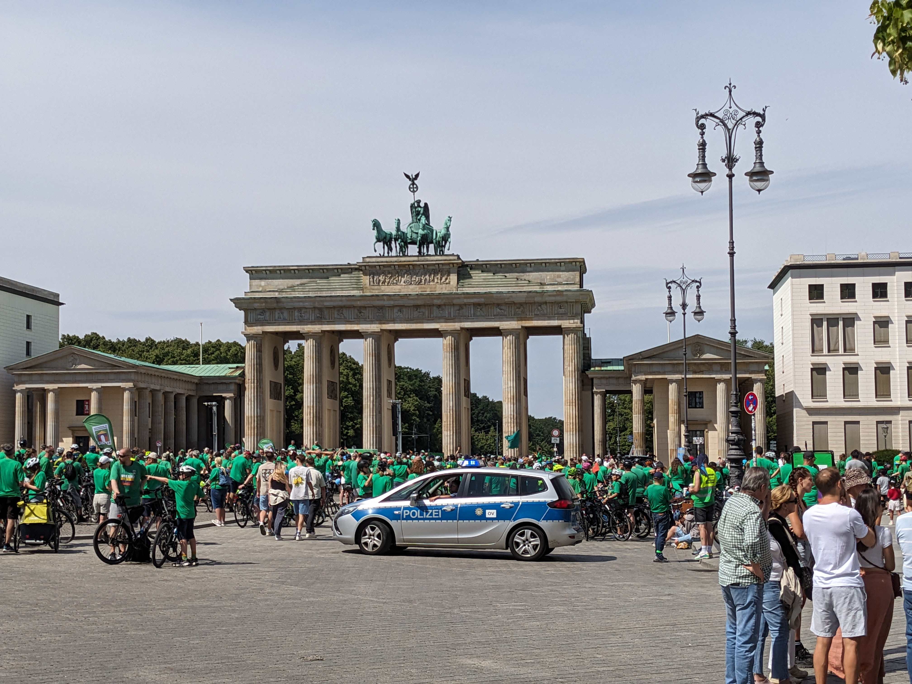
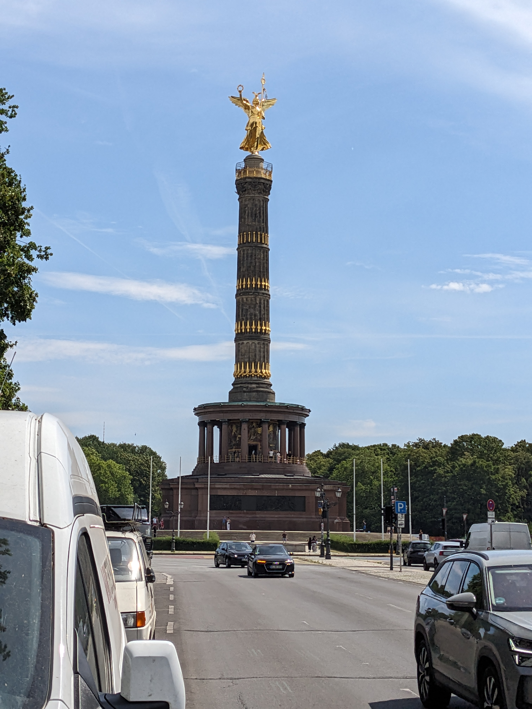

The Brandenburg Gate (Brandenburger Tor) is one of Berlin’s most iconic landmarks, located at the western end of Unter den Linden boulevard in the city center. Built between 1788 and 1791, it was originally a symbol of peace commissioned by King Frederick William II of Prussia. The neoclassical gate features twelve Doric columns forming five passageways, with the central one historically reserved for royalty. Atop the gate stands the Quadriga, a statue of the goddess of victory driving a four-horse chariot. Over the centuries, the gate has symbolized various political eras—from Prussian grandeur to Nazi propaganda, Cold War division, and finally, German reunification. Today, it serves as a powerful symbol of unity and peace, and is a must-visit site for anyone exploring Berlin’s rich history.
The Haus der Kulturen der Welt (House of World Cultures), often called the "pregnant oyster" due to its distinctive curved roof, is a prominent cultural institution in Berlin located in the Tiergarten park near the Spree River. Originally built in 1957 as a gift from the United States for the International Building Exhibition, it now serves as Germany’s national center for international contemporary arts and cultural exchange. The center hosts a wide range of events, including exhibitions, performances, film screenings, and conferences that explore global perspectives on art, politics, and society. With its striking architecture, riverside terrace, and focus on non-European cultures, it offers visitors a unique space to engage with critical global issues through artistic and intellectual dialogue. A nearby café and outdoor sculptures add to the appeal, making it a worthwhile stop for culturally curious travelers.

The Reichstag building is one of Berlin’s most important historic and political landmarks, located near the Brandenburg Gate in the government district. Originally completed in 1894 to house the Imperial Diet of the German Empire, it has witnessed key moments in German history, including the 1933 fire and the reunification of Germany after the Cold War. After a major renovation by architect Sir Norman Foster in the 1990s, the Reichstag became the seat of the modern German Bundestag (Parliament). Its most striking feature is the large glass dome, which offers panoramic views of Berlin and symbolizes transparency in government—visitors can walk up a spiral ramp inside the dome and look down into the parliamentary chamber. Free to visit with prior registration, the Reichstag is both a symbol of democracy and a fascinating architectural attraction in the heart of Berlin.
Café Kranzler, perched atop the iconic Kranzler Eck at the corner of Kurfürstendamm and Joachimsthaler Straße in Charlottenburg, is a must‑visit blend of history, atmosphere, and people‑watching. The original coffeehouse dates back to 1932, replacing the former Café des Westens, and was rebuilt in a striking rotunda with red‑and‑white striped awning in 1957–58, becoming a symbol of vibrant West Berlin life. Following post‑wall redevelopment, the café re-emerged in 2016 as a branch of Berlin’s specialty roaster The Barn, offering modern minimalist seating and fragrant single‑origin Brews. Visitors access the rooftop setting via a tucked‑away lift or spiral staircase through the retail complex, then slide into wooden stools or floor cushions and settle in with a signature Milchkaffee or pastry—while savouring an elevated terrace view over the bustling Ku’damm below. For anyone exploring Berlin’s café culture, Café Kranzler offers both a slice of mid‑century charm and a contemporary urban retreat.

The Siegessäule (Victory Column) is a striking monument located in the heart of Berlin’s Tiergarten park, standing as a proud symbol of 19th-century Prussian military victories. Originally erected in 1873 to commemorate Prussia’s triumphs in wars against Denmark, Austria, and France, the column was later relocated to its current site by the Nazis in 1938 as part of their grand urban plans. Towering at over 60 meters, the column is crowned by a gilded statue of Victoria, the Roman goddess of victory—affectionately nicknamed “Goldelse” by Berliners. Visitors can climb the 285-step spiral staircase inside the column for a small fee and are rewarded with panoramic views over the Tiergarten, the Reichstag, and the city skyline. Its historical significance and impressive vantage point make the Siegessäule a popular destination for those wanting both context and perspective on Berlin’s layered past.
